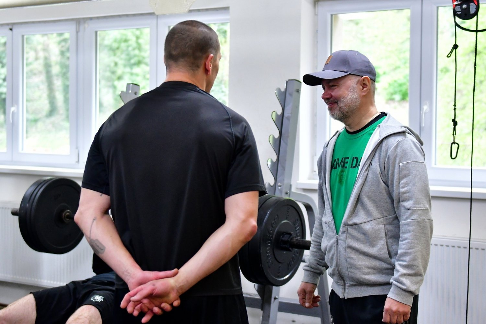
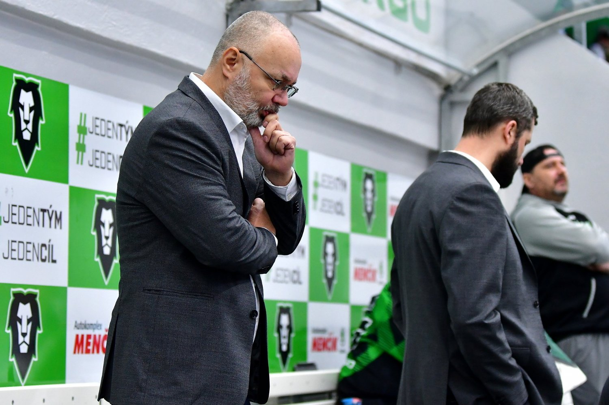

M l. B o l. – Mladoboleslavští hokejisté počátkem května počali letní přípravu na novou sezonu, mají tak za sebou první tréninkové dny. Krátce po jejím začátku jsme proto vyzpovídali hlavního trenéra Jiřího Kalouse, který se v rozhovoru ohlíží za uplynulou sezonou, komentuje změny v kádru a také hledí směrem k novému ročníku. Jak probíhalo rozhodování ohledně pokračování Alexe Lintuniemiho a co si hlavní kouč Bruslařů slibuje od Pavola Skalického? To se dozvíte níže.
Pane trenére, kádr se teď v mezisezóně hodně mění. Měl jste představu o tom, jak to bude vypadat?
Po sezoně končilo pár kluků, někteří své působení v organizaci ukončili tím, že už v průběhu podepsali jinde a s ostatními jsme se zase rozloučili my. Ten průvan, kdybych to tak nazval, je docela razantní. V podstatě nám odešlo deset hráčů a to si myslím, že je poměrně velký zásah. Tým, který se tu teď tvoří, se bude muset sehrávat, což samozřejmě zabere nějaký čas. Myslím si ale, že jsme se společně s Martinem Ševcem snažili odchody adekvátně nahradit. Chtěli jsme a chceme jako snad každý tým posílit o bodového hráče, to je jedna věc. Dále jsme určitě chtěli silného hráče do předbrankového prostoru, což věřím, že se nám povedlo přivést. Co se týče beků, kteří přišli, tak od nich očekáváme, že budou plnit tu roli, jakou si od nich představujeme. Celkově tak doufám, že budeme konkurenceschopní.
Jinými slovy tak doufáte, že přišly svaly, důraz a góly. Dalo by se to tak označit?
O těch svalech bych zatím trošku polemizoval. (směje se) To je teď velká výzva a úkol i pro kondičního trenéra, aby se nám povedlo je nabrat. Ohledně těch gólů – nejsem jiný než moji kolegové, a tak doufám, že tohle bude mnohem lepší než v minulé sezoně i těch předešlých. Boleslav vždycky měla na ten počet střel velmi nízkou produktivitu a na tom se prostě musí pracovat. Je potřeba to zlepšit, abychom mohli pomýšlet na lepší umístění než v uplynulé sezoně.
Co se týče odchodů, zeptal bych se na Alexe Lintuniemiho, který byl zejména u fanoušků velmi oblíbený. Byla tam snaha se dohodnout?
Rozhodování ohledně Alexovy budoucnosti u nás bylo velmi těžké. Myslím si, že jeho výkony byly takové jakoby na houpačce. Samozřejmě měl velmi dobré fyzické parametry, na druhou stranu je ale příliš nepoužíval hlavně směrem do defenzivy. Je to spíše hráč ofenzivnější, v té útočné fázi je velmi vidět a umí to hrát. Tam si ho vlastně fanoušek všimne nejvíce, předvádí tam hezké akce. Když si to ale potom vezmeme do čísel, tak to byl nejhorší bek v lize ve statistice plus mínus, měl 23 záporných bodů. Měl tu svoji hru dost postavenou na risku, což nebylo úplně podle mých představ. I kvůli tomu jsme se rozhodli, že naši spolupráci neprodloužíme.
Slibujete si hodně od Pavola Skalického, jenž tady zažil povedenou sezonu a mohl by se tak stát takovým útočným esem týmu?
Ano, určitě si od něj hodně slibuji. Na druhou stranu věřím, že těch útočných es tady budeme mít víc. Jsem totiž věčný optimista, což se nemění. (smích) Věřím, že nejen Skalda nám pomůže k tomu, abychom produktivitu zlepšili. Budeme apelovat i na další hráče, aby to celé neleželo jen na něm a nedělali jsme z něj nějakého spasitele, který tu bude dávat gól za gólem a posouvat Boleslav nahoru v tabulce. Budeme ten sběr bodů očekávat prakticky od všech útočných hráčů. Doufám, že se k němu někdo připojí.
Dále se vrací Jan Růžička, který se bude snažit o restart po té nepříliš povedené loňské sezóně. Jak vidíte vaši situaci v brankovišti, budou se oba gólmani dobře doplňovat?
Věřím v to. Chtěl bych, aby ta rivalita mezi nimi byla zdravá a konkurovali si v dobrém slova smyslu. Myslím si, že to fungovat bude, oba jsou již zkušení a mají svoji nespornou kvalitu. Oba se budou navzájem posouvat, budou tým držet a odvedou pro něj maximum. Růža (Jan Růžička, pozn. red.), který se teď vrací zpět, je domácí hráč a měl tu výborné sezony. Sice teď neměl úplně optimální období, takže to chce restart. Filip měl naopak velmi dobrá čísla, takže já jsem s tou brankářskou dvojici spokojený.
Bude potřeba nějak si společně s brankáři sednout a promluvit si o tom, jak to na jejich postu bude probíhat?
Bavím se tak se všemi hráči průběžně, do gólmanů se ale hlavní trenér příliš nemontuje. (směje se) Tohle bude mít na starosti hlavně Lukáš Mensator, který s nimi pracuje výborně a rozumí jim lépe. Má naši stoprocentní důvěru, že je dokáže dobře připravit a budou nás držet.
Budete se nějak snažit o to, abyste změnil tvář týmu? Přišel jste v průběhu rozjeté sezony, takže na to nebyl moc čas, teď ale máte celé léto.
Myslím si, že ta filozofie týmu, která tady je, se měnit nebude. Chceme hrát aktivní hokej, který nebude směřovaný do defenzivy. Samozřejmě je obrana stejně důležitá jako útok, záleží ale jakým stylem je prováděná. Může být aktivní i při hře bez puku. My se určitě budeme chtít prezentovat takhle, boleslavský tým navíc vždycky dobře bruslil a to v tom zůstane.
V posledních letech se tady dávalo velmi málo gólů, hodně zápasů dokonce končilo nulou. Už jste si po sezoně dokázali zanalyzovat, čím to je?
Jsou to obecné problémy, s kterými se hokej u nás potýká. Dáváme málo gólů. Byl jsem se teď podívat na osmnáctkách, nadále bych měl působit u dvacítky, takže ty trendy sleduji. Obecně čeští hráči, je už jedno jestli útočníci nebo beci, mají tendenci v dobré pozici přehrávat situace a místo zakončení ještě hledat přihrávku nebo výhodnější pozici. Málo se tak střílí z dobrých pozic. Taky tam chybí práce v předbrankovém prostoru, aby někdo clonil brankáři ve výhledu, to je takzvaný screen. Tyhle věci musíme zlepšit.
Zmínil jste dvacítku. Jak to vypadá s místními talenty z boleslavské juniorky, budete je v nadcházející sezoně využívat a zapojíte je do přípravy?
Rád bych je do toho zapojoval, hned několik jich s námi jde do letní přípravy. Uvidíme, kdo z nich si o tu pozici třeba i v sestavě řekne, o tom se rozhodne ještě v průběhu léta. Máme ale představu, že bychom minimálně dva juniory chtěli nechat hrát, je ale důležité, aby tomu odpovídaly jejich výkony. Jedním z nich je samozřejmě Aleš Čech, kterého jsme stáhli z Finska a znám ho z dvacítek. Má předpoklad na to, aby mohl nastupovat v základní sestavě. Také bychom chtěli využít minimálně jednoho útočníka, pokud na to tedy bude výkonnost.
Vraťme se do přítomnosti. Některé týmy začínají přípravu na ledě a jiní zase na suchu, jak to vypadá u vás?
Máme tu výborného kondičního kouče. Samozřejmě jsme se na tom jako trenéři dohodli všichni společně, ale je to hlavně v jeho režii. Vlastně celá ta suchá část přípravy bude pod vedením Michaela Obrtela, on ji má na starosti.
Děkujeme za rozhovor.